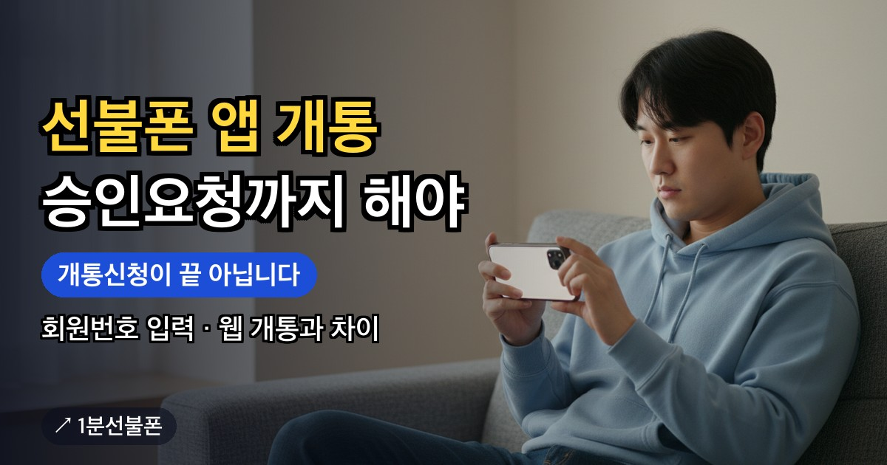

멤버십 앱(앤스마트)으로 선불폰을 개통하다가 「태블릿소유자 회원번호」 칸 앞에서 멈췄다면 아래 순서를 보세요. 앱 개통은 웹 셀프개통과 달리 회원번호를 입력하는 단계가 있고, 개통신청을 누른 뒤 1분선불폰 카카오톡 채널에 승인요청까지 해야 끝납니다. 앱 다운로드부터 여섯 단계를 순서대로 정리하고, 웹 개통과 어디가 다른지 표로 비교했습니다.
- 앱 개통은 여섯 단계: 앱 다운로드 → 안면인증·본인인증 → 회원번호 입력 → 남은 정보 입력 → 개통신청 → 카톡 승인요청
- 「태블릿소유자 회원번호」 칸에는 2772872를 입력
- 개통신청만으로 끝나지 않고 1분선불폰 카카오톡 채널에 승인요청을 해야 개통이 완료
- 웹 셀프개통은 개통하기만 누르면 별도 승인 없이 완료되고, 해피콜은 웹 개통 기준으로 안내
- 2026년 10월부터 안면인증 필수, 본인 명의 간편인증서가 없으면 센터 방문
선불폰 앱 개통, 여섯 단계 순서
멤버십 앱(앤스마트)으로 개통하는 순서는 정해져 있으니 앞뒤를 바꾸지 말고 아래 차례대로 진행하세요.
- 멤버십 앱 다운로드 — 앱을 내려받아 실행합니다.
- 안면인증과 본인인증 — 본인 명의 간편인증서로 확인합니다. 앱에서는 네이버·토스·카카오 등의 인증서를 쓸 수 있습니다.
- 태블릿소유자 회원번호 입력 — 2772872를 입력합니다.
- 남은 정보 입력 — 화면이 요청하는 나머지 항목을 채웁니다.
- 개통신청 — 마지막에 개통신청 버튼을 누릅니다.
- 카톡 승인요청 — 1분선불폰 카카오톡 채널에 승인요청을 해야 개통이 완료됩니다.
이 방식의 핵심은 다섯 번째 단계에서 끝난 것이 아니라는 점입니다. 앱 화면이 유심 정보를 어느 단계에서 묻는지는 안내된 순서에 없으니 화면 안내를 따라가세요.
태블릿소유자 회원번호 칸에는 2772872를 입력합니다
앱 신청 화면에서 태블릿소유자 회원번호 칸이 나오면 2772872를 입력합니다. 칸 이름에 태블릿이 들어 있어서 태블릿 상품 이야기로 읽히기 쉽지만, 이 글에서 다루는 것은 앱으로 선불폰을 개통하는 순서 중 세 번째 단계에서 넣는 값입니다.
숫자 일곱 자리를 입력한 뒤 한 번 더 눈으로 확인하고 다음 단계로 넘어가세요. 이 회원번호는 앱 개통 순서에 있는 단계이고, 웹 셀프개통의 안내 순서에는 이 단계가 없습니다.
개통신청만으로 끝나지 않습니다, 카톡 승인요청까지
앱에서 개통신청을 누르면 신청이 접수될 뿐 개통이 완료되는 것은 아닙니다. 1분선불폰 카카오톡 채널에 승인요청을 해야 개통이 끝납니다. 이 글 아래의 「카톡 상담하기」 버튼과 화면에 떠 있는 카톡 상담 버튼이 같은 채널로 연결되고, 사이트에는 카톡 상담 시간이 08:00~22:00로 안내돼 있습니다.
1분선불폰 사이트는 신분증 사진, 주민등록번호, 인증번호를 받지 않는다고 안내합니다. 카톡 승인요청 때 무엇을 보내야 하는지는 따로 안내된 바가 없으니 채널의 안내를 따르세요. 승인이 나기까지 걸리는 시간과 승인 결과를 어디로 알려 주는지도 안내된 바가 없어서 이 글에서 약속하지 않습니다. 이 부분은 승인요청을 보낼 때 카톡 채널에서 확인하세요.
웹 셀프개통과 앱 개통은 무엇이 다른가
같은 앤텔레콤 선불폰이어도 웹과 앱은 순서가 다릅니다. 두 방식 모두 안면인증과 본인인증을 거치지만 나머지는 아래처럼 갈립니다.
| 항목 | 웹 셀프개통 | 앱 개통 |
|---|---|---|
| 시작하는 곳 | 앤텔레콤 신청 페이지 | 멤버십 앱(앤스마트) |
| 간편인증서 | 토스·카카오 등 | 네이버·토스·카카오 등 |
| 회원번호 입력 | 순서에 없음 | 태블릿소유자 회원번호 입력 |
| 마지막 버튼 | 개통하기 | 개통신청 |
| 완료되는 때 | 별도 승인요청 없이 완료 | 카톡 채널 승인요청까지 해야 완료 |
| 그다음 | 본사 확인 전화(해피콜)를 받아야 하며, 못 받으면 번호가 해지될 수 있음 | 해피콜은 웹 개통 기준 안내이고, 앱 순서에는 안내가 없음 |
쓰는 간편인증서가 네이버라면 앱 목록에는 네이버가 적혀 있습니다. 웹 목록은 「등」으로 끝나서 가능 여부를 단정할 수 없으니 신청 화면에서 확인하세요. 어느 쪽이 더 낫다고 정해 둔 안내는 없으니, 가진 인증서와 마지막 단계의 차이(카톡 승인요청이 따르는지)를 보고 고르면 됩니다. 웹 개통의 전체 흐름은 선불폰 셀프개통 글에 있습니다.
앱으로 개통하기 전에 챙길 것
앱 신청을 열기 전에 아래를 먼저 확인해 두세요.
- 본인 명의 간편인증서 — 앱은 네이버·토스·카카오 등이고, 없다면 센터 방문 개통으로 진행합니다.
- 안면인증 — 2026년 10월부터는 안면인증을 반드시 통과해야 개통할 수 있습니다. 형광등 빛이 반사되지 않도록 하고, 고개를 돌릴 때 시선도 고개와 함께 돌리세요.
- 앤텔레콤 유심 — 다른 통신사에서 쓰던 유심은 다시 쓸 수 없습니다. 편의점 유심은 6,600~8,800원이고 요금제는 12,100원부터이며 가입비는 없습니다.
- 셀프개통 대상 여부 — 외국인(여권)·미성년자·법인은 공식 FAQ가 셀프개통 불가 대상으로 두고 센터 방문 개통을 안내합니다.
- 카톡 승인요청 — 개통신청을 마친 뒤 바로 카톡 채널로 승인요청까지 이어서 하도록 준비해 두세요.
인증 도중 계속 막히면 개통 안면인증과 선불폰 개통 안되는 이유를, 센터 방문은 센터 찾기를 보세요.
개통이 확인된 뒤에 할 일
승인요청을 마치고 개통이 확인되면 두 가지가 남습니다.
- 유심 인식 — 휴대폰에 앤텔레콤 유심을 끼우고 전원을 2~3회 이상 껐다 켜면 자동으로 인식된다고 공식 FAQ가 안내합니다. 그래도 안 될 때의 순서는 선불폰 유심 인식 안됨 글에 있습니다.
- 개통 당일 충전 — 개통할 때 충전은 필수이고, 개통한 날까지 하지 않으면 다음 날 번호가 정지되거나 해지될 수 있습니다. 충전은 선불폰 개통 당일 충전 글에 정리돼 있습니다.
자주 묻는 질문
앱 개통과 웹 셀프개통은 무엇이 다른가요?
웹은 개통하기를 누르면 별도 승인요청 없이 완료되고 뒤이어 해피콜을 받아야 합니다. 앱은 회원번호 입력과 카톡 승인요청이 더해지고, 간편인증서도 앱은 네이버·토스·카카오 등, 웹은 토스·카카오 등으로 안내됩니다.
웹으로 개통하면 카톡 승인요청은 안 해도 되나요?
웹 셀프개통은 개통하기를 누르면 별도의 승인요청 없이 개통이 완료된다고 안내합니다. 대신 개통 뒤에 본사에서 걸려 오는 확인 전화(해피콜)를 꼭 받아야 하고, 받지 못하면 번호가 해지될 수 있습니다.
앱으로 개통해도 해피콜을 받아야 하나요?
해피콜 안내는 웹 셀프개통 기준으로만 있고 앱 개통 순서에는 안내가 없어서, 앱 개통 뒤에도 같은 전화가 오는지는 이 글에서 단정하지 않습니다. 승인요청을 보낼 때 카톡 채널에서 확인하고, 개통 뒤에 걸려 오는 전화는 받아 두세요.
앱 개통에서 네이버 간편인증서도 쓸 수 있나요?
앱(앤스마트)은 네이버·토스·카카오 등의 간편인증서를 쓸 수 있다고 안내합니다. 「등」으로 끝나는 목록이라 이것만 된다는 뜻은 아닙니다. 웹 목록은 토스·카카오 등이라 네이버가 되는지는 신청 화면에서 확인해야 하고, 간편인증서가 없으면 센터 방문 개통으로 진행합니다.
앱 개통의 승인요청은 어느 카톡 채널로 하나요?
1분선불폰 카카오톡 채널입니다. 이 글 아래의 「카톡 상담하기」 버튼과 화면의 카톡 상담 버튼이 같은 채널로 연결되며, 사이트에는 카톡 상담 시간이 08:00~22:00로 안내돼 있습니다. 승인까지 걸리는 시간은 안내된 바가 없습니다.
최종 업데이트: